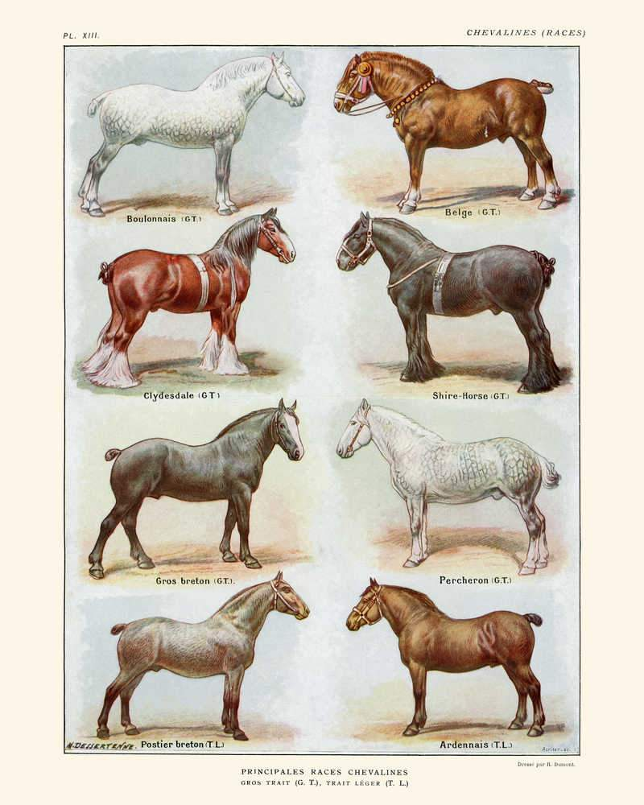

Det finns många olika hästraser. Här kan du läsa på om några olika varianter. Valet av häst här viktigt! Ta god tid på dig innan du gör ditt val. Din häst kommer vara med dig många år framöver.
Klicka på bilden nedan för att läsa på om olika raser!
Om du inte ser någon bild på sidan beror det på att skärmen är för liten.
